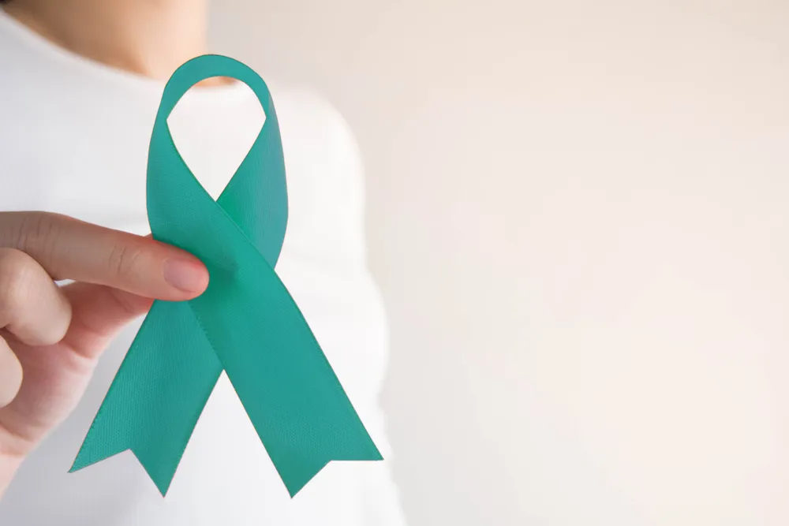

Risk Factors for Cervical Cancer

Cervical cancer used to be the leading cause of death in women in the United States, according to the CDC . Thankfully, with routine pelvic exams and Pap tests, the rates have gone down dramatically. But there is still more to do to lower the rates of cervical cancer and protect women from this disease.
One way to lower the likelihood of developing cervical cancer is to learn all of your risk factors. A risk factor is something that places you at an increased chance of developing a disease. The more risk factors you have for cervical cancer, the greater chance you have at developing it. Keep reading to learn more about the many risk factors for cervical cancer.
Human Papillomavirus (HPV)
Human papillomavirus (HPV) is the number one risk factor for developing cervical cancer and is the most common sexually transmitted infection (STI) in the United States says the CDC . There are over 40 types of HPV that can infect the genital region. The high-risk types of HPV infections are the ones that are linked to cervical cancer reports the American Cancer Society.
HPV has no known cure but there are ways for healthcare professionals to manage the infection. Even better, you can avoid contracting HPV by getting an HPV vaccine to protect your body against some types of the virus. It’s important to remember that not every type of HPV causes cervical cancer. If you’ve been diagnosed with an HPV infection talk to your doctor about your treatment options.
Smoking
Nothing good comes from smoking. It causes a slew of horrible conditions and can shorten your life expectancy. When you smoke, you are exposing yourself and those around you to multiple chemicals that can cause cancer. These chemicals don’t just affect your lungs, but many other parts of your body. According to the American Cancer Society , female smokers are two times as likely to get cervical cancer compared to a non-smoker.
Smoking increases your risk of cervical cancer in two ways. The first is that smoking decreases your immune system , so your ability to fight HPV infections is not optimal. The second way is that “tobacco by-products have been found in the cervical mucus of women who smoke” reports the source. The thought is that cervical cancer can be caused by these by-products. They actually change or damage the cervix cells’ DNA, which might lead to cervical cancer.
Your Sexual History
You’ve probably heard the phrase, your past can come back to haunt you. Turns out this includes your sexual history. There are many ways that your sexual history can increase your risk of cervical cancer. Probably the biggest way is that the more partners you have, the more likely you will be exposed to HPV. Which as we said earlier, is a huge risk factor for cervical cancer.
The other two ways that your sexual history can increase your risk for cervical cancer are by “becoming sexually active at a young age” and “having many sexual partners” says the American Cancer Society . When your doctor talks to you about sexual history, be honest. It can be seriously uncomfortable but transparency about your past can help keep you healthy in the future.
Family History
Like many types of cancer, cervical cancer can have a familial tendency. The American Cancer Society tells us that “if your mother or sister had cervical cancer, your chances of developing the disease are higher than if no one in the family had it.” The source also says that there is a rare chance that the inherited inclination in some families may be caused by an “inherited condition that makes some women less able to fight off HPV infection than others.”
Unfortunately, family history is something you just can’t control and so it’s referred to as a non-modifiable risk factor. Talk to the women in your family to find out if anyone has ever had a cervical cancer diagnosis. If the answer is yes then it’s time to let your doctor know so they can keep extra close tabs on your health.
Diethylstilbestrol (DES)
Diethylstilbestrol (DES) was a medication given to prevent miscarriage in certain women between 1938 and 1971. “Women whose mothers took DES (when pregnant with them) develop clear-cell adenocarcinoma of the vagina or cervix more often than would normally be expected” reports the American Cancer Society . The incidence is still only about 1 case per 1,000 women (putting it at 0.1-percent likelihood of developing cancer).
The medication was no longer used after 1971, which would make the youngest women who could have been exposed in their late 40s. The source reports that “there is no age cut-off when these women are felt to be safe from DES-related cancer.” If you know your mother took DES talk to your doctor about your risk and what needs to be done.
Poor Immune System
Your immune system is a wondrous network that works to protect your body from all sorts of invaders, including cancer. Some people have a weakened immune system and are at a greater risk for developing infections, like HPV, that can lead to cervical cancer. Those people with HIV have a weakened immune system and are at a larger risk for contracting HPV says the American Cancer Society.
Women who have their immune system suppressed due to an autoimmune disease or from medication are also at an increased risk for developing cervical cancer. Talk to your doctor if you have a weakened immune system to determine the best ways you can protect yourself from infections and cancer.
Chlamydia
Chlamydia is an STI that can affect both women and men. However, its effects on women can be detrimental to their reproductive health. The CDC tells us, “it can cause serious, permanent damage to a woman’s reproductive system.” Often times women who have the bacterial infection exhibit no symptoms and have no idea they are infected until they are tested during a routine pelvic exam.
In regards to cervical cancer, there have been studies that show “a higher risk of cervical cancer in women whose blood tests and cervical mucus showed evidence of past or current chlamydia infection,” says the American Cancer Society . The source also reports that other studies showed that chlamydia could actually help HPV grow in the cervix, therefore increasing the patient’s risk of cervical cancer.
Young Age During Pregnancy
Pregnancy can be hard for any woman, let alone a young woman. To add to the difficulties, if you are under 20-years-old when you have your first full term pregnancy, you are more likely to develop cervical cancer says the American Cancer Society . Women who are over 25-years-old are less likely to develop the cancer than their younger counterparts.
While a young age is a risk factor for cervical cancer it does not predict that any woman under 20-years-old will develop the cancer. Risk factors are just that. An increased risk, not a guarantee.
Low Income
Women who have a low income are less likely to have regular access to health care. This means they are less likely to have routine health visits, pelvic exams, and cervical cancer screenings. When you don’t have routine health care your risk for cancer and other conditions increases.
If you or a woman you know does not have the health care they need encourage them to reach out to a social worker or their city health department. Screening for cervical cancer is an important routine health examination that every woman should have access to.
Poor Diet
A poor diet that is deficient in fruits and vegetables can affect your body in many different ways. This includes increasing your risk for cervical cancer as reported by the American Cancer Society . It’s easy to eat processed food that is both convenient and tasty but your body needs the nourishment of all the vitamins found in fresh food.
One way to keep your body healthy is to try and eat the rainbow. This means filling your plate with all the colors of the rainbow. Red, orange, yellow, green, blue, and purple are colors that can be found in vegetables, fruits, and so much more. A healthy diet will improve your health in so many ways, so go out there and eat the rainbow!
Pregnancy
Pregnancy , a risk factor for cervical cancer? Well, sort of. Multiple pregnancies, meaning three or more full term pregnancies can put a woman at a higher risk for developing cervical cancer. What researchers are unsure of is, is it the pregnancy that increases the women’s risk for cervical cancer or is it due to their “…increased exposure to HPV infection with sexual activity” says the American Cancer Society .
The source continues to say that there is research to suggest that hormone changes during pregnancy may make women more sensitive to getting HPV or that pregnancy can lower your immune system leading to an HPV infection, which can lead to cervical cancer. Whatever it is that makes multiple pregnancies a risk factor for cervical cancer, it’s good to keep it in the back of your mind so that you are aware of your own risks and take the necessary precautions.
Source: https://activebeat.com/your-health/women/risk-factors-for-cervical-cancer/